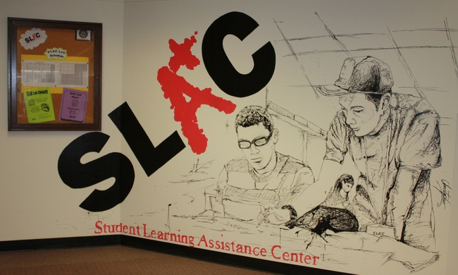

Welcome to SLAC!
The Student Learning Assistance Center can help you learn to SLAC in collegiate style through a variety of
academic support programs including a walk-in tutoring lab,Supplemental Instruction, and execllent online
resources. Funded primarily through student service fees,Texas State students may use any and of SLAC's
resources at no additional cost. Surf through our website for additional information on our various sevices
and Welcome to SLAC!
Lab Tutors for Fall 2013
Subject Areas: Math, Chemistry, Biology, Physics, Business,
and Writing
and Writing
Supplemental Instructors for Fall 2013
Subject Areas: BIO 1330/1342,CHEM 1341/1342/2341/2342,
HIST 1310/1320,ECO 2301,Math 1315/1329/3323,POST 2310, PHIL 1320
